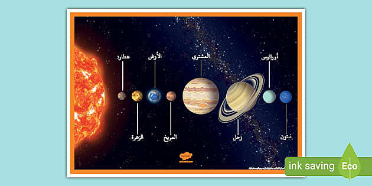

النظام الشمسي هو المجموعة التي تتكون من الشمس وجميع ما يَدور حولها من أجرام بما في ذلك الأرض والكواكب الأخرى، ويَشمل النظام الشمسي أجراماً أخرى أصغر حجماً هي الكواكب الصغيرة والكويكبات والنيازك والمذنبات، إضافة إلى سحابة رقيقة من الغاز والغبار تسمى بـ"الوَسَط بين الكوكبي" وتدور أيضا حول الشمس ولكن بشكل غير مباشر، كما ويوجد توابع للكواكب وتسمى الأقمار الطبيعية والتي يَبلغ عددها أكثر من 150 قمرًا معروفًا في النظام الشمسي، معظمها تدور حول الكواكب العملاقة الغازية واثنين من هذه الأقمار أكبر حجمًا من كوكب عطارد. ليس النظام الشمسي سوى جزء صغير من نظام ضخم من النجوم والأجسام الأخرى تسمى مجرة درب التبانة حيث يدور النظام الشمسي حول مركز المجرة مرة واحدة كل 225 مليون سنة، ومجرة درب التبانة هي مجرد واحدة من ملايين المجرات التي تشكل الكون بدورها. ما هي سحابة أورت؟ عناصر النظام الشمسي الشمس الشمس هي نجم ضخم يُوجد في مركز النظام الشمسي وهو أكبر جسم في النظام الشمسي حيث يبلغ قطرها 1،392،000 كيلومتر. وتحتوي الشمس على أكثر من 99٪ من جميع المواد الموجودة في النظام الشمسي، وهي عبارة عن كرة ساخنة جدًا من غازات الهيدروجين والهيليوم حيث تبلغ درجة حرارتها أكثر من 28،080،000 درجة فهرنهايت (15،600،000 درجة مئوية) ويتغير الهيدروجين في جوهره إلى الهيليوم باستمرار فتنتج عن هذه العملية كميات هائلة من الإشعاع أو الطاقة حيث تعتمد الكائنات الحية في الأرض على هذه الطاقة بشكل ضوء وحرارة. للحصول على كل الموارد المميزة على موقعنا،
